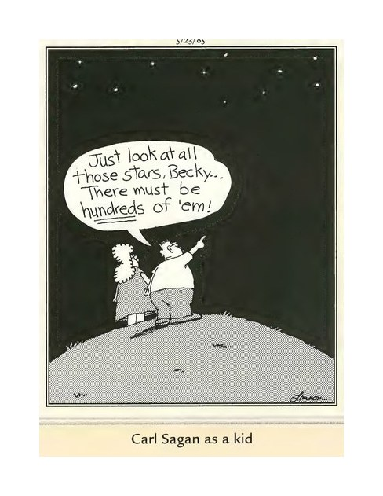

Your Daily Computer Brief
🔴 ALERT
The FBI put out a warning yesterday about a new trick: scammers send you a link that opens a real-looking Google or Microsoft screen asking, "Allow this app access?" One click hands them your email — your messages, your contacts, your password-reset emails — even though your password never changed, and even with two-step sign-in on. Change your password afterward and they still stay logged in. Fix in two minutes: open your email account settings and look for "connected apps" or "third-party access," then remove anything you don't recognize. Never approve an access request you didn't start. (Source: According to the FBI's official Internet Crime Complaint Center, September 1, 2026)
Today in Tech
- Firefox rolled out a free update yesterday and switched to a faster every-two-weeks update schedule — same as Chrome — so security fixes reach your computer sooner. (Source: Mozilla, September 1, 2026)
- Criminals are selling scans of more than 153 million driver's licenses on the dark web, and the FBI has opened an investigation. A free credit freeze is cheap insurance. (Source: KrebsOnSecurity, September 2, 2026)
- Apple's big event is next Wednesday, September 9, and the buzz is its first foldable phone plus new Apple Watches — a fun week for gadget fans. (Source: Reuters, August 26, 2026)
Daily Tip
Losing that skinny arrow on your screen? Press Start, type "mouse pointer," and open the result. Slide the size bar up, pick a color you can see, and click Save. Free, built into Windows, easy on the eyes.
😄 COMEDY BREAK
